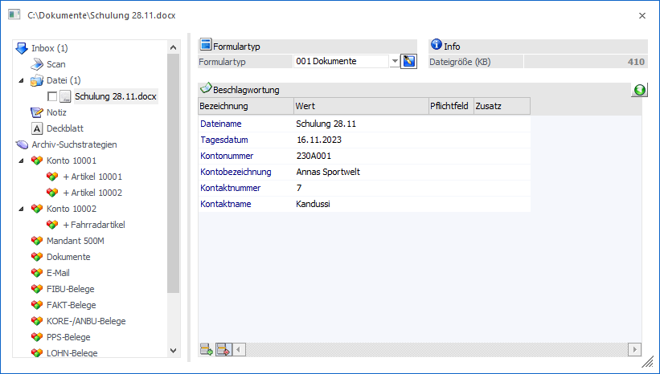

Neben der Kopfleiste stehen auch "im" Cockpit diverse Funktionen zur Verfügung.
Ø Widget verschieben
Per Drag & Drop können Widgets an eine andere Stelle im Cockpit verschoben werden. Diese Änderung gilt solange, bis der Button "Standard wiederherstellen" angewählt wurde.
Ø Widget-Größe ändern
Die Größe eines Widgets kann durch Groß- oder Kleinziehen eines Widgets verändert werden. Diese Änderung gilt solange, bis der Button "Standard wiederherstellen" angewählt wurde.
Ø rechte Maustaste
Über die rechte Maustaste stehen einige Funktionen im Cockpit zur Verfügung:
ü Fensterposition speichern
Jedes
Fenster kann an einen beliebigen Ort am Bildschirm verschoben werden, wodurch
der Bildschirmaufbau individuell gestaltet werden kann. Durch Anwahl von
"Fensterposition speichern" wird die Fensterposition des aktiven Fensters von
der WinLine benutzerspezifisch gespeichert und beim nächsten Aufruf an der
gespeicherten Stelle angezeigt.
Achtung
Es können nur solche Fenster gespeichert werden, die nicht in Vollbildmodus angezeigt werden.
ü Drucken
Mit dieser Option kann
das Cockpit ausgedruckt werden. Es handelt sich hierbei um einen HTML-Ausdruck,
d.h. das Druckergebnis hängt u.a. von der Positionierung der Elemente im Cockpit
ab.
ü Ausschneiden
Damit wird der
Inhalt eines Eingabefeldes gelöscht und in die Zwischenablage kopiert. Von dort
aus kann es z.B. in ein anderes Eingabefeld eingefügt werden.
ü Kopieren
Damit wird der Inhalt
eines Eingabefeldes bzw. eines Widgets in die Zwischenablage kopiert, von wo es
z.B. in ein anderes Eingabefeld kopiert werden kann. Der Inhalt des
Eingabefeldes bzw. des Widgets wird nicht verändert.
ü Einfügen
Damit wird der Inhalt
der Zwischenablage in das aktuelle Eingabefeld kopiert.
Ø Archiveinträge erstellen
Sofern die Lizenz für das Modul WinLine ARCHIV II oder das WinLine CRM vorhanden ist, können externe Dokumente auch über das Cockpit (bzw. alle weiteren Programmbereiche) archiviert werden. Hierzu wird die gewünschte Datei (z.B. aus dem Windows-Explorer) per Drag & Drop in das Cockpit gezogen und fallen gelassen (dieses funktioniert auch mit mehreren Dokumenten).
Anschließend öffnet sich das Fenster "Neuer Archiveintrag", in welchem die Beschlagwortung (ggfs. auch pro Dokument) durchgeführt werden kann.

Wenn die Beschlagwortung durchgeführt wurde, kann der Archiveintrag durch Drücken der F5-Taste oder durch Anklicken des Buttons "Ok" erzeugt werden.